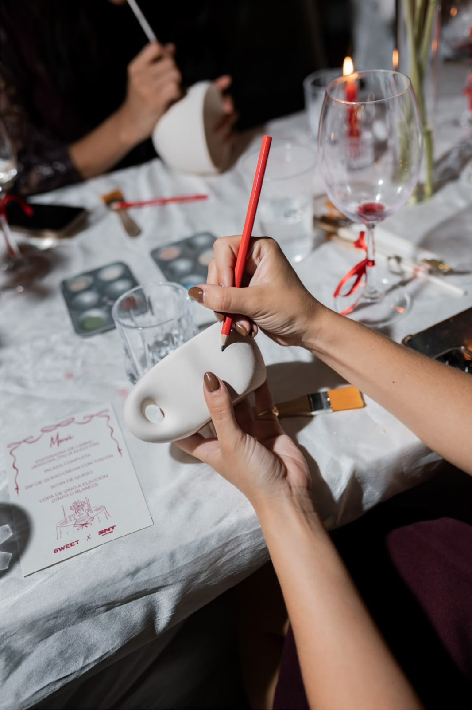

Blog › Presente de experiência em SP
Presentear em São PauloPresente de experiência em SP: o que dar pra quem tem tudo

Existe um tipo de pessoa impossível de presentear: a que "não quer nada" e já tem de tudo. Mais um perfume, mais uma caneca, mais um objeto que vai pra gaveta — não é isso que emociona. O que marca de verdade é vivência: um momento que a pessoa não teria sozinha.
Por isso o presente de experiência virou a aposta certeira. Aqui vai por que ele funciona, ideias por perfil e como dar um vale-presente em São Paulo.
Ideias de presente por quem vai ganhar

Pra um casal
Um date diferente de presente — pintura a dois, cerâmica ou um jantar hands-on.
Ver ideias a dois →Pra quem ama um drink
Aula de coquetelaria: ele aprende a fazer os próprios drinks. Presente que rende histórias.
Ver bartenderia →
Pra quem precisa relaxar
Uma aula de cerâmica é um presente de pausa — desacelerar e criar com as mãos.
Ver cerâmica →
Pra uma família
Elarah Kids: uma oficina criativa pra pais e filhos viverem juntos. Presente pra casa toda.
Ver Elarah Kids →Não sabe o gosto?
O vale-presente é a saída: você dá o valor e a pessoa escolhe a experiência e a data.
Ver vale-presente →
Ver todas
Explore o catálogo completo e ache a experiência perfeita pra presentear.
Explorar tudo →Como funciona o vale-presente
Simples: você escolhe o valor (ou uma experiência específica), recebe o vale-presente e quem ganha agenda quando e o que quiser. É a forma mais segura de presentear — não erra a data nem o gosto, e a pessoa ainda tem o prazer de escolher.
É também um presente que não ocupa espaço e não vira "mais uma coisa". Vira lembrança. Veja ideias específicas pra Dia dos Pais e pra mãe.
Perguntas sobre presente de experiência em SP
O que dar de presente pra quem já tem tudo?
Uma experiência. Em vez de mais um objeto, você dá um momento — uma aula de cerâmica, coquetelaria, pintura ou gastronomia. Fica na memória.
Como funciona o vale-presente da Elarah?
Você escolhe o valor ou a experiência, recebe o vale-presente e quem ganha agenda quando quiser.
Quanto custa um presente de experiência em SP?
As experiências começam em cerca de R$150 por pessoa, e o vale-presente pode ter o valor que você quiser.
Bora presentear com memória?
Conta pra quem é que a Elarah sugere a experiência (ou o vale-presente) perfeito em SP.